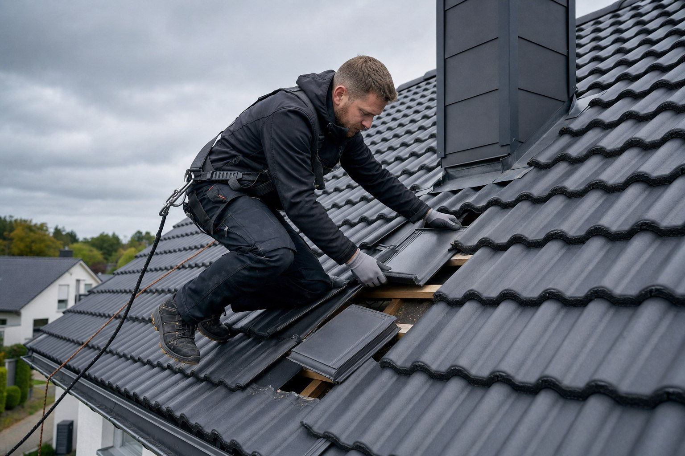

EingriffGezielt

Wenn die Substanz trägt
Eindeckung
erhalten.
- Sinnvoll, wenn
- Schäden klar begrenzt sind und der übrige Dachaufbau weiter zuverlässig funktioniert.
- Das wird gemacht
- Defekte Teile ersetzen, Anschlüsse instand setzen und die Wasserführung kontrollieren.
- Das bleibt
- Die geeignete vorhandene Eindeckung und Konstruktion bleiben weitgehend erhalten.